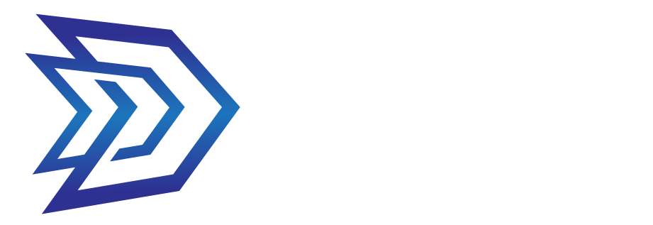

Expertise Résumé Let’s talkMarketing and Graphic Design Specialist connecting performance campaigns, search, content, web and hands-on creative execution.
Current role
Marketing and Graphic Design Specialist
Darley Aluminium
2022 – present
Core strengths
Paid media & reporting · SEO & content · Campaign design · Web & email
Profile
I work across marketing strategy, paid media, SEO, content and graphic design—bringing the analytical and visual sides of a campaign together from planning through to reporting.
Darley Aluminium
Marketing and Graphic Design Specialist · Remote
Google Ads and organic search · a recent two-week window
Earlier roles
Lead Graphic Designer · Penrith
Led team branding and created social content, posters, flyers and advertising.
Receipt and Dispatch · Winston Hills
Assistant Manager · Broadmeadow, NSW
Tools
Google Ads, Google Analytics, Meta Business Suite, Facebook Ads, Mailchimp
Adobe InDesign, Illustrator, Photoshop, After Effects, Figma, print production and motion graphics
WordPress, Elementor, WPBakery, HTML/CSS, interface design and prototyping; working knowledge of JavaScript and PHP
Microsoft Word, Excel and PowerPoint; Excel-to-InDesign catalogue automation
Education
Western Sydney University · Dean’s Merit List, 2021–2022
Western Sydney University · First in class, 2020
Hunter TAFE NSW
Hunter TAFE NSW
Let’s connect
Marketing performance and design craft, working as one.